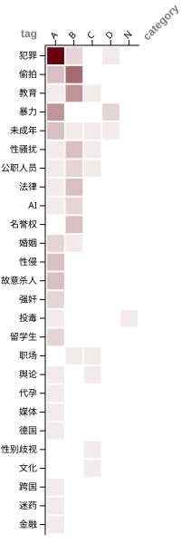

范围：本月已发布文章（source/_posts，按 frontmatter 日期归月）。未发布 / abort 不计入。
总计：31 篇
本月综述
2026年5月共发布31篇文章，以A类（刑事案件）和B类（民事/较大舆论事件）为主，合计占比84%。本月事件集中在偷拍、亲密关系暴力与AI生成不雅图像三条主线，其中偷拍类事件多发于校园和公共交通场所，受害人以年轻女性为主。90%的文章标记了PING，显示本月大量案件在发布时尚处于司法审理或调查推进阶段。
主题脉络
- 偷拍与隐私侵害：长沙男子偷拍视频发境外平台牟利案、成都网红店女厕偷拍视频被打包售卖（受害者遭网暴）、华南理工大学男生偷拍女同学裙底事件、南京审计大学研究生顾某某偷拍被开除、天津伯苓高中男生偷拍女同学私密视频后校内传播、福州采耳店老板在女员工宿舍装摄像头被拘、上海：网约车司机偷拍女乘客并发至司机群、西安地铁大爷偷拍女乘客遭掌掴、上海政法学院致远阁女厕偷拍（研二在读生沈某被行政拘留）、新乡学院男生隔窗盗取女生衣物事件
- 亲密关系暴力与杀害：广西南宁施暴男友行拘期满5天杀害前女友、苗苗家暴致死案开庭、重庆城口男子10天内3次杀害女友未遂被判4年、安徽砀山：男子疑似在女友奶茶中投毒、23岁女孩离世男友持欠条索30万
- AI生成不雅图像：女学生生活照遭AI篡改为色情图片（警方仅按肖像权纠纷调解）、女子生活照被AI篡改成不雅图（报警遭遇”无能为力”）、男子168元兜售AI一键脱衣教程获刑案
- 儿童及未成年人性侵与性剥削：小棉袄成恋童癖暗语儿童性剥削群组曝光、小学保安猥亵多名学生获刑5年4个月、黄子佼持有逾2000部未成年人性影像免于服刑、天津伯苓高中男生偷拍女同学私密视频后校内传播
- 跨国性犯罪：德国Telegram群组大规模迷奸案、中国籍NUS博士生新加坡企图强奸室友被判刑案
- 公职人员侵权与机构失职：福建三明副校长以性暴力威胁言论羞辱女学生、公职人员辱骂女性为”慰安妇”案、广西南宁施暴男友案中两处警方接处警被法院认定违法
结构性观察
本月多起事件呈现以下事实层面的反复模式：其一，施害者被行政拘留后短期内再度实施更严重侵害，广西南宁案（行拘期满5天后杀人）与重庆城口案（10天内三次杀害未遂）均属此类；其二，偷拍事件在处理结果上出现显著分化，同类行为在不同学校分别获得开除学籍（南京审计大学）与留校察看（华南理工大学）的差异处分，多起校园偷拍案无行政处罚公开记录；其三，AI生成不雅图像案件在两起报警后均未获刑事立案，警方分别以”侵犯肖像权纠纷”和”不构成涉黄”为由处理，与已有法院判例形成对比；其四，多起案件中受害者在司法程序启动后遭受二次网络骚扰，成都莉莉岛案受害者在偷拍视频被打包再传播后大规模遭网暴即为典型。
分类统计
| 分类 | 含义 | 篇数 | 占比 |
|---|---|---|---|
| A | 刑事案件；影响极为恶劣的舆论事件 | 14 | 45% |
| B | 民事案件；影响较大的舆论事件 | 12 | 39% |
| C | 非官方组织；影响较小的舆论事件 | 2 | 6% |
| D | 个人行为 | 2 | 6% |
| N | 中立事件/等待后续 | 1 | 3% |
标签统计
占比 = 含该标签的文章数 ÷ 本月总篇数（一篇多标签会重复计入，合计可超 100%）
| 标签 | 篇数 | 占比 |
|---|---|---|
| PING | 28 | 90% |
| 犯罪 | 15 | 48% |
| 偷拍 | 10 | 32% |
| 教育 | 7 | 23% |
| 暴力 | 7 | 23% |
| 未成年 | 6 | 19% |
| 性骚扰 | 5 | 16% |
| 公职人员 | 4 | 13% |
| 法律 | 4 | 13% |
| AI | 3 | 10% |
| 名誉权 | 3 | 10% |
| 婚姻 | 3 | 10% |
| 性侵 | 3 | 10% |
| 故意杀人 | 3 | 10% |
| 强奸 | 2 | 6% |
| 投毒 | 2 | 6% |
| 留学生 | 2 | 6% |
| 职场 | 2 | 6% |
| 舆论 | 2 | 6% |
| 代孕 | 1 | 3% |
| 媒体 | 1 | 3% |
| 德国 | 1 | 3% |
| 性别歧视 | 1 | 3% |
| 文化 | 1 | 3% |
| 跨国 | 1 | 3% |
| 迷药 | 1 | 3% |
| 金融 | 1 | 3% |

文章列表
按分类 S→N 排序，组内按日期
A
- 2026-05-04 《德国Telegram群组大规模迷奸案》 — PING / 犯罪 / 性侵 / 迷药 / 跨国 / 留学生 / 德国
- 2026-05-06 《广西南宁施暴男友行拘期满5天杀害前女友》 — 故意杀人 / 暴力 / 犯罪 / PING
- 2026-05-07 《黄子佼持有逾2000部未成年人性影像免于服刑》 — 犯罪 / 偷拍 / 未成年
- 2026-05-09 《男子168元兜售AI一键脱衣教程获刑案》 — AI / 犯罪 / 法律
- 2026-05-12 《中国籍NUS博士生新加坡企图强奸室友被判刑案》 — 强奸 / 性骚扰 / 留学生 / PING
- 2026-05-13 《重庆城口男子10天内3次杀害女友未遂被判4年》 — 故意杀人 / 投毒 / 暴力 / 犯罪 / PING
- 2026-05-15 《山西订婚强奸案：席某平出狱后，其母抖音账号营利权限被暂停》 — 强奸 / 婚姻 / 舆论 / 媒体 / PING
- 2026-05-22 《长沙男子偷拍视频发境外平台牟利案》 — 偷拍 / 犯罪 / PING
- 2026-05-26 《成都网红店女厕偷拍视频被打包售卖，受害者遭网暴》 — 偷拍 / 犯罪 / PING
- 2026-05-26 《苗苗家暴致死案开庭》 — 故意杀人 / 暴力 / 婚姻 / 犯罪 / PING
- 2026-05-28 《杭州临平非法代孕窝点曝光：女记者遭暴力拖拽腓骨骨折，患者花10万两次移植失败身体受损》 — PING / 暴力 / 犯罪 / 代孕
- 2026-05-28 《小学保安猥亵多名学生获刑5年4个月》 — 犯罪 / 性侵 / 未成年 / 教育 / 公职人员
- 2026-05-28 《23岁女孩离世男友持欠条索30万》 — 犯罪 / 暴力 / 金融 / PING
- 2026-05-29 《小棉袄成恋童癖暗语儿童性剥削群组曝光》 — 犯罪 / 性侵 / 未成年 / PING
B
- 2026-05-04 《女学生生活照遭AI篡改为色情图片，警方仅按肖像权纠纷调解》 — PING / AI / 名誉权 / 性骚扰 / 法律
- 2026-05-13 《新乡学院男生隔窗盗取女生衣物事件》 — 犯罪 / 教育 / PING
- 2026-05-13 《华南理工大学男生偷拍女同学裙底事件》 — 偷拍 / 教育 / PING
- 2026-05-14 《天津伯苓高中男生偷拍女同学私密视频后校内传播》 — 偷拍 / 未成年 / 教育 / PING
- 2026-05-15 《福建宁德：婚后一年半未同房，男方索要72万离婚赔偿》 — 婚姻 / 法律 / PING
- 2026-05-20 《上海：网约车司机偷拍女乘客并发至司机群》 — 偷拍 / 性骚扰 / PING
- 2026-05-22 《女子生活照被AI篡改成不雅图，报警遭遇”无能为力”》 — 名誉权 / AI / PING
- 2026-05-25 《公职人员辱骂女性为”慰安妇”案》 — PING / 名誉权 / 公职人员 / 法律
- 2026-05-25 《南京审计大学研究生顾某某偷拍被开除》 — 偷拍 / 公职人员 / 教育 / PING
- 2026-05-26 《西安地铁大爷偷拍女乘客遭掌掴》 — 偷拍 / 性骚扰 / PING
- 2026-05-27 《福州采耳店老板在女员工宿舍装摄像头被拘》 — 偷拍 / 职场 / PING
- 2026-05-29 《上海政法学院致远阁女厕偷拍：研二在读生沈某被行政拘留》 — 犯罪 / 偷拍 / 教育 / PING
C
- 2026-05-05 《福建三明：初中部副校长拔河赛现场以性暴力威胁言论羞辱女学生》 — PING / 教育 / 性别歧视 / 性骚扰 / 未成年 / 公职人员
- 2026-05-28 《炽灯燃《宇宙探索编辑部》剧本署名争议》 — 职场 / 文化 / 舆论 / PING
D
- 2026-05-13 《南昌15岁男生公共场所从背后撞击女性》 — 犯罪 / 暴力 / 未成年 / PING
- 2026-05-22 《上海：陌生男子尾随女子入小区从背后踢倒，仅受行政拘留》 — 暴力 / PING
N
- 2026-05-02 《安徽砀山：男子疑似在女友奶茶中投毒》 — PING / 投毒
待跟进
本月标记 PING 的事件
- 2026-05-02 《安徽砀山：男子疑似在女友奶茶中投毒》 — PING：警方通报后未再发布嫌疑人身份及法律状态
- 2026-05-04 《德国Telegram群组大规模迷奸案》 — PING：邵之霆柏林案件判决待定（5月18日及20日尚有庭审）
- 2026-05-04 《女学生生活照遭AI篡改为色情图片，警方仅按肖像权纠纷调解》 — PING：后续司法程序及行政处罚状态未公开
- 2026-05-05 《福建三明：初中部副校长拔河赛现场以性暴力威胁言论羞辱女学生》 — PING：停职检查为目前公开的最终处置状态，教育局通报承诺的”按相关规定予以严肃处理”尚无具体结果公告
- 2026-05-06 《广西南宁施暴男友行拘期满5天杀害前女友》 — PING：刑事一审尚未宣判；江南公安分局行政诉讼二审结果未公布
- 2026-05-12 《中国籍NUS博士生新加坡企图强奸室友被判刑案》 — PING：上诉法院裁决待定
- 2026-05-13 《重庆城口男子10天内3次杀害女友未遂被判4年》 — PING：是否上诉或抗诉不明确
- 2026-05-13 《新乡学院男生隔窗盗取女生衣物事件》 — PING：无公安行政处罚或刑事立案公开信息
- 2026-05-13 《华南理工大学男生偷拍女同学裙底事件》 — PING：无公安行政处罚公开信息
- 2026-05-13 《南昌15岁男生公共场所从背后撞击女性》 — PING：调查后续仍在办理中，伤情可能重新鉴定，受害人将提起诉讼
- 2026-05-14 《天津伯苓高中男生偷拍女同学私密视频后校内传播》 — PING：刑事立案及处理结果待定
- 2026-05-15 《山西订婚强奸案：席某平出狱后，其母抖音账号营利权限被暂停》 — PING：席某平申诉结果待定
- 2026-05-15 《福建宁德：婚后一年半未同房，男方索要72万离婚赔偿》 — PING：司法诉讼结果待定
- 2026-05-20 《上海：网约车司机偷拍女乘客并发至司机群》 — PING：警方处置及平台处理结果无公开通报
- 2026-05-22 《长沙男子偷拍视频发境外平台牟利案》 — PING：起诉或审判进展待公开
- 2026-05-22 《成都网红店女厕偷拍视频被打包售卖，受害者遭网暴》 — PING：案件进一步侦办中，判决待定
- 2026-05-22 《女子生活照被AI篡改成不雅图，报警遭遇”无能为力”》 — PING：施害者身份及后续处理未公开
- 2026-05-22 《上海：陌生男子尾随女子入小区从背后踢倒，仅受行政拘留》 — PING：精神鉴定结果及后续刑事处置未公布
- 2026-05-25 《公职人员辱骂女性为”慰安妇”案》 — PING：二审结果待定
- 2026-05-25 《南京审计大学研究生顾某某偷拍被开除》 — PING：税务局正式取消录用公告待发布
- 2026-05-26 《西安地铁大爷偷拍女乘客遭掌掴》 — PING：手机取证结果及依法处置情况待公布
- 2026-05-26 《苗苗家暴致死案开庭》 — PING：一审宣判待定
- 2026-05-27 《福州采耳店老板在女员工宿舍装摄像头被拘》 — PING：以行政拘留十日结案，无刑事追诉
- 2026-05-28 《杭州临平非法代孕窝点曝光：女记者遭暴力拖拽腓骨骨折，患者花10万两次移植失败身体受损》 — PING：立案调查进展及涉事人员处置结果待公布
- 2026-05-28 《23岁女孩离世男友持欠条索30万》 — PING：专项小组调查结果待定，刑事定性未明
- 2026-05-28 《炽灯燃《宇宙探索编辑部》剧本署名争议》 — PING：孔大山未公开回应，后续处理待定
- 2026-05-29 《小棉袄成恋童癖暗语儿童性剥削群组曝光》 — PING：主管部门调查立案进展未公布
- 2026-05-29 《上海政法学院致远阁女厕偷拍：研二在读生沈某被行政拘留》 — PING：校方专项工作组处理结果及刑事追诉进展待公布